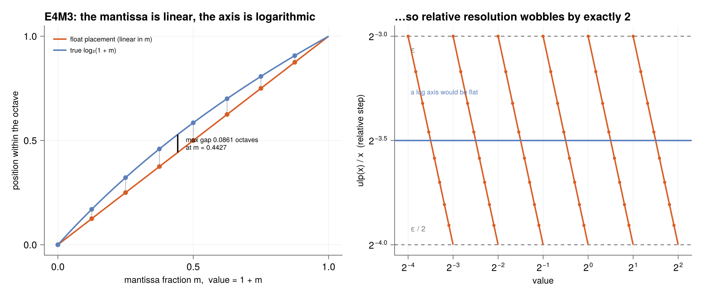

Formats
Fixed point
A fixed-point number is an ordinary two's-complement integer that both parties agree to read with a binary point at a fixed position. In Q$m$.$n$ notation the stored integer $I$ denotes $x = I / 2^n$.
xpuFP.resolution — Function
resolution(f) -> Float64The constant step between adjacent representable values, 2^-n.
xpuFP.fxmax — Function
fxmax(f) -> Float64Largest representable value, 2^m - 2^-n.
xpuFP.fxmin — Function
fxmin(f) -> Float64Smallest (most negative) representable value: -2^m if signed, else 0.
The properties are rigid: the step is $2^{-n}$ everywhere, so absolute error is bounded by $2^{-n-1}$ but relative error explodes for tiny values. Storing $0.001$ in Q7.8 gives $0$ or $0.0039$ — up to 100 % relative error. That is precisely the weakness floating point fixes.
Floating point
One struct covers the whole zoo because the formats differ only in field widths and in what the reserved codes mean.
A float grid is a log axis, sampled
The quickest way to see what a floating-point format is geometrically: take the log of its defining equation.
\[x = 1.m \times 2^{e} \qquad\Longrightarrow\qquad \log_2 x = \underbrace{e}_{\text{integer}} + \underbrace{\log_2(1.m)}_{\in\,[0,1)}\]
The exponent field drops out as the integer part — the octave index, or binade — and the mantissa contributes only the fraction. A semilog axis places every power of two at an equal spacing, and so does the exponent field. That correspondence is exact and free: it is the whole reason floating point handles dynamic range at all, and it is why plot_edges_map and plot_binade_spacing draw a format's universe on a log axis rather than a linear one.
What is not logarithmic is the inside. A format with $m$ mantissa bits puts $2^m$ values in every binade and spaces them linearly — the mantissa is an integer counter, and it steps by a constant $2^{e-m}$. So a float grid is a piecewise-linear approximation of a log axis: pinned exactly at every power of two, sagging in between.
plot_log_axis_analogy(E4M3)
How big is the sag
The gap between where a float puts a value and where a logarithm would is $m - \log_2(1+m)$, maximised where the derivative vanishes:
\[\frac{d}{dm}\bigl[m - \log_2(1+m)\bigr] = 0 \;\Longrightarrow\; m = \frac{1}{\ln 2} - 1 \approx 0.4427, \qquad \text{gap} = 0.0861 \text{ octaves}\]
Independent of the mantissa width. More mantissa bits sample the same sagging curve more finely; they do not straighten it.
That constant shows up somewhere unexpected. Read a positive float's bit pattern as an integer and you get $2^{23}\,(\log_2 x + 127)$ — to within exactly that error. The hardware encoding is a piecewise-linear logarithm, which is why the fast inverse-square-root trick works by subtracting an integer.
The difference that matters numerically
A true log axis has constant relative resolution. A float does not: $\mathrm{ulp}(x)/x$ is a sawtooth that halves smoothly across each binade and doubles instantly at the boundary, so the best and worst relative step differ by exactly the radix, 2, at every mantissa width. Numerical analysts call this wobbling precision, and it is why error bounds carry a stray factor of the base.
machine_eps reports the top of that band, $2^{-m}$; the bottom is $2^{-m-1}$. Averaged over a binade the relative error is better than $\epsilon$ suggests, and at the boundary it is exactly $\epsilon$ — which is the honest reason to quote $\epsilon$ as a bound rather than a typical case.
Where the analogy stops
At both ends the two objects part company, in opposite directions:
| Semilog axis | Floating point | |
|---|---|---|
| Octave spacing | equal by construction | equal — the exponent field is the tick index |
| Inside an octave | continuous, logarithmic | $2^m$ points, spaced linearly |
| Relative resolution | constant everywhere | sawtooth, wobbling by exactly the radix |
| Multiplication | becomes addition | adds exponents, multiplies mantissas |
| Zero | unreachable, at $-\infty$ | an exact, special-cased value |
| Below the floor | continues forever | linear subnormal ramp, then stops |
| Above the ceiling | continues forever | overflows to $\pm\infty$ or saturates |
The bottom end is the interesting one. Below minnormal a format abandons the logarithmic scheme entirely and switches to a fixed linear grid — the subnormals — before stopping at an exact zero. Viewed on a log axis those subnormals do the opposite of crowding: they fly apart. E4M3's seven of them span $2^{-9}$ to $2^{-6.19}$, nearly three octaves for seven values, where a normal binade fits eight into one. And zero sits at $\log_2 0 = -\infty$, which is not a coordinate the axis has. plot_edges_map draws exactly that gap, and the subnormals exist to bridge it in even steps.
A logarithmic number system stores $\log_2 x$ directly in fixed point. It is the semilog axis: perfectly constant relative resolution, no wobble, and multiplication really does collapse to addition. What it gives up is the other operation — addition needs a lookup table. Floating point is the engineering compromise between the two, and the wobble is the price of the compromise.
Shrink the mantissa and the compromise becomes visible. E2M1 — the element format inside MXFP4 — has one mantissa bit, so it samples each octave exactly twice, at log₂ offsets $0$ and $0.585$:
grid(E2M1) # 0.5 1 1.5 2 3 4 6, and their negatives15-element Vector{Float64}:
-6.0
-4.0
-3.0
-2.0
-1.5
-1.0
-0.5
0.0
0.5
1.0
1.5
2.0
3.0
4.0
6.0That is a log axis sampled twice per octave with a 0.0861-octave sag at each step — and it is still close enough to logarithmic that a shared block exponent can carry the dynamic range the mantissa gave up. That trade is the subject of Block formats.
The registry
Geometry
xpuFP.nbits — Function
nbits(f) -> IntTotal width of the format in bits (sign + exponent + mantissa).
Total width in bits.
nbits(f::DigitFormat) -> IntBits per digit cell, ⌈log₂|D|⌉.
The hardware coincidence that seals the maximally redundant set's popularity: ⌈log₂5⌉ = ⌈log₂7⌉ = 3, so at radix 4 both alphabets occupy the same 3-bit cell — the extra redundancy is free at the storage level.
xpuFP.emin — Function
emin(f) -> IntExponent of the smallest normal value (1 - bias in the IEEE convention).
xpuFP.emax — Function
emax(f) -> IntExponent of the largest normal binade.
xpuFP.maxfinite — Function
maxfinite(f) -> Float64The largest finite magnitude the format can represent.
For E4M3_NAN formats the top mantissa code is stolen by NaN, which is exactly why OCP E4M3 tops out at 448 = 2^8 × 1.75 rather than 480.
Largest representable value.
xpuFP.minnormal — Function
minnormal(f) -> Float64Smallest positive normal magnitude, 2^emin.
xpuFP.minsubnormal — Function
minsubnormal(f) -> Float64Smallest positive magnitude of any kind. Equals minnormal when the format has no subnormal ramp.
xpuFP.machine_eps — Function
machine_eps(f) -> Float64Machine epsilon 2^-mbits: the gap between 1.0 and the next representable value.
xpuFP.dynamic_range — Function
dynamic_range(f) -> Float64Ratio of the largest finite value to the smallest positive one.
Encoding and decoding
xpuFP.encode — Function
encode(f::FloatFormat, x::Real) -> UInt64Quantize x onto f's grid and return the raw bit pattern. Round-trips with decode: decode(f, encode(f, x)) == quantize(f, x).
julia> string(encode(FP32, -6.375), base=16)
"c0cc0000"encode(f::FixedFormat, x::Real; mode=SATURATE) -> IntScale, round (ties to even), and store x as the underlying integer.
julia> encode(FixedFormat(7,8), -3.65) # the report's worked example
-934encode(f::DigitFormat, x; kwargs...) -> SignedDigitsxpuFP.decode — Function
decode(f::FloatFormat, code::Integer) -> Float64Decode a raw bit pattern into the real value it denotes, applying the format's reserved-code rules. The inverse of encode.
julia> decode(FP32, 0x41C80000)
25.0
julia> decode(E2M1, 0b0111) # the top FP4 code
6.0decode(f::FixedFormat, I::Integer) -> Float64Recover the real value I / 2^n from a stored integer.
decode(::DigitFormat, sd::SignedDigits)xpuFP.quantize — Function
quantize(f::FloatFormat, x::Real) -> Float64Round x to the nearest value representable in f, ties to even — the same roundTiesToEven that IEEE 754 makes the default. Out-of-range magnitudes either saturate to maxfinite or become ±Inf, per the format's saturate flag.
This is the only lossy step in any encode pipeline; everything else is bookkeeping.
julia> quantize(E2M1, 2.25) # rounds to 2, an 11% error
2.0
julia> quantize(E2M1, 3.5) # exact midpoint: ties-to-even picks 4 (M=0)
4.0
julia> quantize(E2M1, 100.0) # no infinities in FP4 — it clamps
6.0quantize(f::FixedFormat, x::Real; mode=SATURATE) -> Float64Round x onto the fixed-point grid and return the real value actually stored.
julia> quantize(FixedFormat(7,8), -3.65)
-3.6484375quantize(f::IntFormat, x) -> Float64Round to the nearest integer (ties to even) and clamp into range.
quantize(f::DigitFormat, x; kwargs...)The value f actually stores. Exact whenever x has a finite expansion in the radix, which is the usual case — digit systems are re-spellings, not approximations, so unlike a float format they lose nothing unless you force fracdigits.
xpuFP.grid — Function
grid(f::FloatFormat; finite_only=true) -> Vector{Float64}Every distinct value the format can represent, sorted ascending. Practical only for narrow formats — it refuses above 20 bits. For FP4 this is the whole number system on one line, which is what makes the format so pleasant to reason about:
julia> grid(E2M1)
15-element Vector{Float64}:
-6.0
-4.0
-3.0
-2.0
-1.5
-1.0
-0.5
0.0
0.5
1.0
1.5
2.0
3.0
4.0
6.0grid(f::FixedFormat) -> Vector{Float64}Every representable value, ascending. Refuses formats wider than 20 bits.
grid(f::IntFormat) -> Vector{Float64}xpuFP.posgrid — Function
posgrid(f::FloatFormat) -> Vector{Float64}The non-negative half of grid; the negative half mirrors it.
xpuFP.midpoints — Function
midpoints(f::FloatFormat) -> Vector{Float64}The rounding-cell boundaries of the positive grid: the midpoints between adjacent representable values. Landing exactly on one of these invokes ties-to-even.
For E2M1 these are 0.25, 0.75, 1.25, 1.75, 2.5, 3.5, 5.0 — the report's tie table.